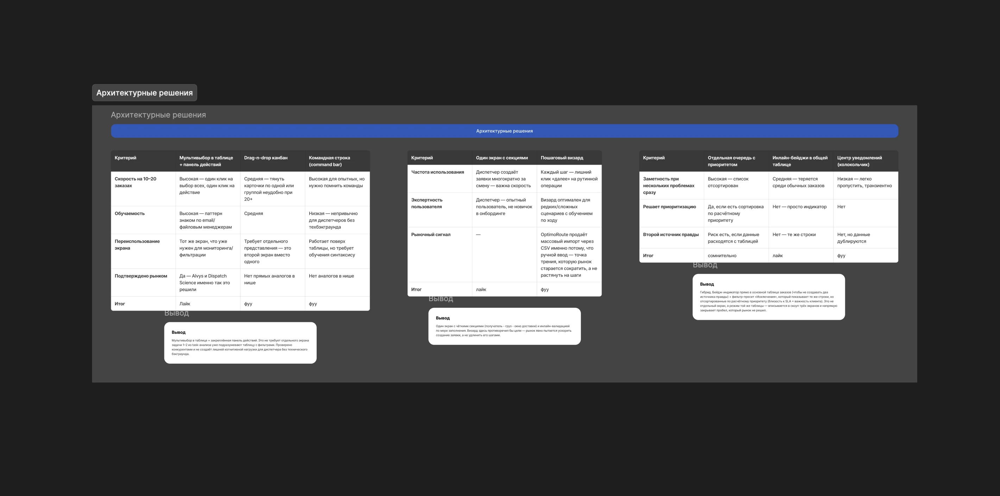

{{ project.title }}
{{ project.role }}
↗ {{ t.openFigma }}{{ t.hookHeading }}
{{ hookText }}
{{ t.contextHeading }}
{{ contextText }}
{{ t.problemHeading }}
{{ problemText }}
{{ t.processHeading }}
{{ t.asIsHeading }}
{{ asIsText }}
{{ t.deskResearchHeading }}
{{ find.text }}
{{ t.conclusionLabel }} {{ deskConclusionText }}
{{ t.jtbdHeading }}
{{ t.jtbdIntro }}
{{ task.num }}
{{ task.name }}. {{ task.desc }}
{{ j.need }}
{{ t.importanceLabel }} — {{ j.importanceLevel }}
{{ j.importanceNote }}
{{ t.confidenceLabel }} — {{ j.confidenceLevel }}
{{ j.confidenceNote }}
{{ t.complexityLabel }} — {{ j.complexityLevel }}
{{ j.complexityNote }}
{{ t.iaHeading }}
{{ ent.name }}
{{ ent.fields }}
{{ priorityCalcText }}
{{ t.designSystemHeading }}
{{ designSystemText }}
{{ t.architectureHeading }}

{{ t.solutionHeading }}
{{ block.title }}
{{ block.text }}
{{ t.resultHeading }}
{{ resultText }}